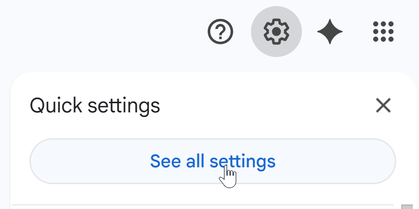
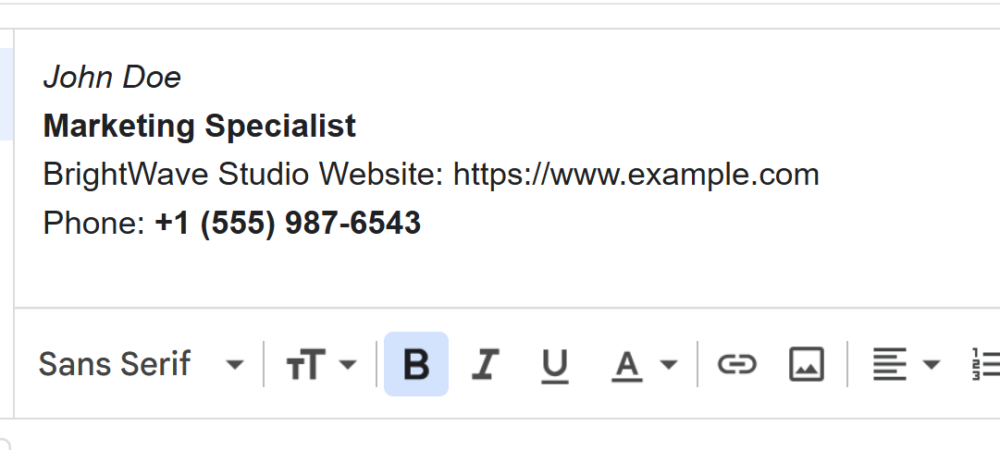
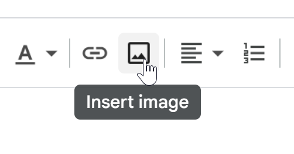

Learning how to create a signature in Gmail is one of the fastest ways to improve the professionalism of your emails. A clean, well-structured signature helps recipients identify who you are, how to contact you, and how to visit your website or social pages. Whether you use Gmail for business or personal communication, following the right steps ensures your signature loads correctly on desktop and mobile.
Why Knowing How to Create a Signature in Gmail Matters
A Gmail signature functions like a digital business card. Every email you send becomes an opportunity to strengthen your brand, share important links, or encourage further actions such as scheduling a call. A strong signature also builds trust because it shows consistency, transparency, and attention to detail.
When you understand exactly how to create a signature in Gmail, you can customize it with your job title, logo, website URL, phone number, and even a short call to action. Gmail’s editor makes this process straightforward as long as you know where to find the right settings.
What You Can Include in a Gmail Signature
-
Your full name and professional title
-
Company name and website link
-
Email, phone number, or booking link
-
Small logo or headshot
-
Social media icons or plain text links
-
Short disclaimer if needed
How to Create a Signature in Gmail (Desktop Step-by-Step)
Follow these steps on a laptop or desktop computer for full editing options.
-
Open Gmail and access settings. Sign in, click the gear icon in the top-right corner, then select “See all settings.”

-
Go to the General tab. Scroll down until you find the section labeled “Signature.”
-
Create a new signature. Click the “Create new” button and give your signature an internal name such as “Work,” “Personal,” or “Business.”
-
Edit your signature content. Type your details using the built-in editor. You can add links, format text, and insert images for branding.

-
Assign the signature to email types. Choose which signature appears in new emails and which appears in replies or forwards. Gmail lets you choose separate defaults for each action.
-
Save your changes. Scroll down to the bottom of the settings page and click “Save Changes.”
How to Add Images to a Gmail Signature
If you want to include a logo, headshot, or social media icons, Gmail makes this simple. In the editor, click the image icon, upload from your device or Google Drive, and select the size. To keep your emails loading fast, use small, compressed images under 100 KB.

How to Create a Signature in Gmail on Mobile
The Gmail mobile app only supports basic text signatures. It does not support HTML formatting, images, or advanced layout. To set it up:
-
Open the Gmail app on your phone.
-
Tap the menu icon and go to “Settings.”
-
Select the email account you want to edit.
-
Tap “Mobile signature.”
-
Enter a simple text-based signature and save it.
If you want a fully designed HTML signature, you must create it on desktop. Mobile will still show the desktop signature when replying in many cases, but appearance may vary by device.
Sample Signature Text You Can Use
Below are simple copy-and-paste examples. Replace the placeholders with your details.
John Doe
Marketing Specialist | BrightWave Studio
Website: https://www.example.com
Phone: +1 (555) 987-6543
Jane Smith
Founder, JS Creative Lab
Portfolio: https://portfolio.example.com
Book a meeting: https://calendly.com/janesmith
Best Practices for a Professional Gmail Signature
-
Keep it short. A long signature looks cluttered and distracts the reader. Two to five lines is typically best.
-
Use one image only. Too many icons or logos can slow loading times and appear unprofessional.
-
Make links clear. Use full URLs or clean anchor text so readers know exactly what they are clicking.
-
Test on multiple devices. Send test emails to yourself and check the signature in Gmail, Outlook, iPhone, and Android clients.
-
Avoid advanced HTML. Keep formatting simple because email clients render complex code inconsistently.
Common Issues and How to Fix Them
My Gmail signature is not showing up
Ensure you selected the correct signature under “Signature defaults.” You may also need to check the option “Insert signature before quoted text in replies.”
Images appear broken for recipients
Use publicly accessible image URLs or upload directly from your computer. Huge images or restricted file permissions can cause loading failures. Compress your images for faster display.
My signature formatting changes when replying
Some email clients strip advanced formatting. Gmail also nests replies within quoted text. Adjust the signature settings so your signature appears above quoted text and keep formatting minimal.
Conclusion
Now that you know exactly how to create a signature in Gmail, you can build a clean and effective email footer that reinforces your personal or professional brand. A well-designed Gmail signature helps recipients trust you, find your contact details quickly, and engage with your website or social profiles. Review your signature every few months to keep it accurate and aligned with your current role, company, or services.